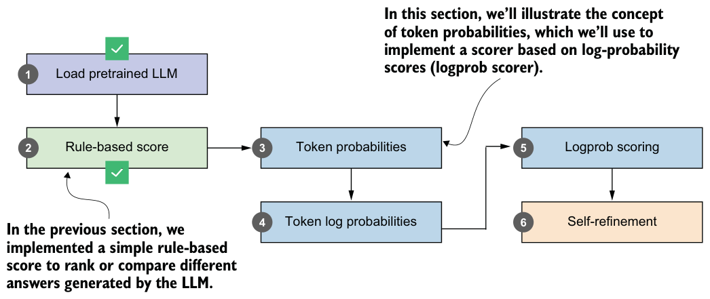
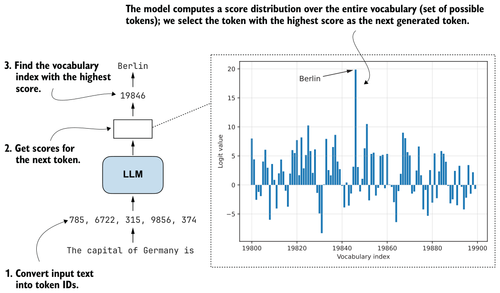
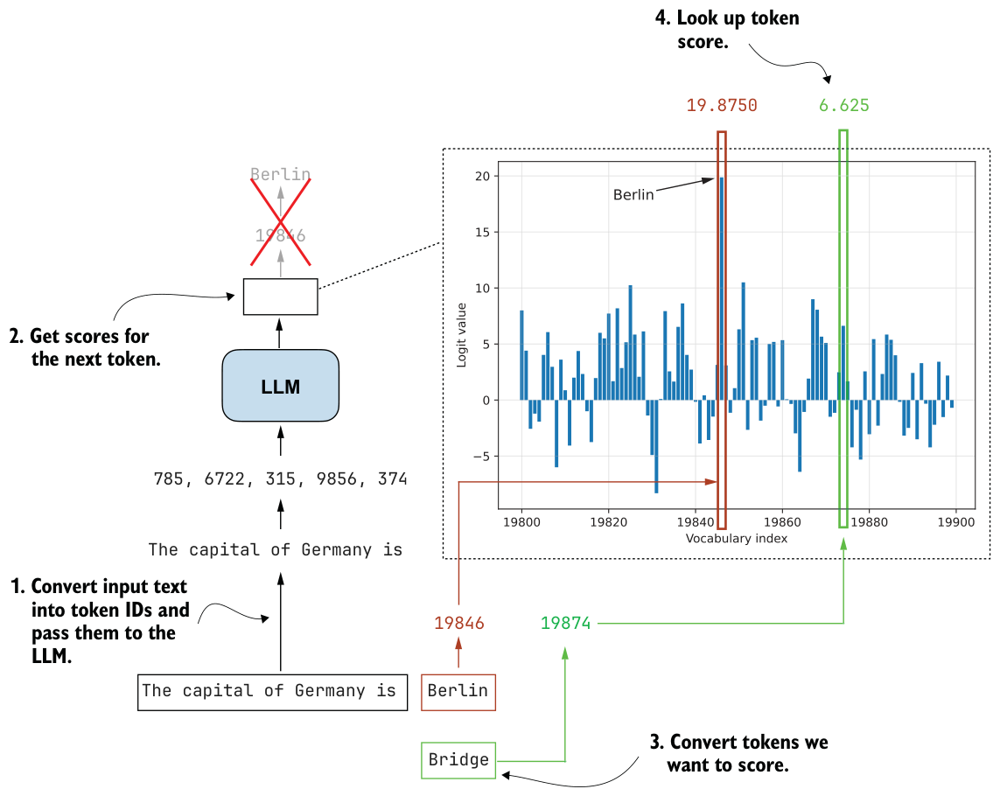
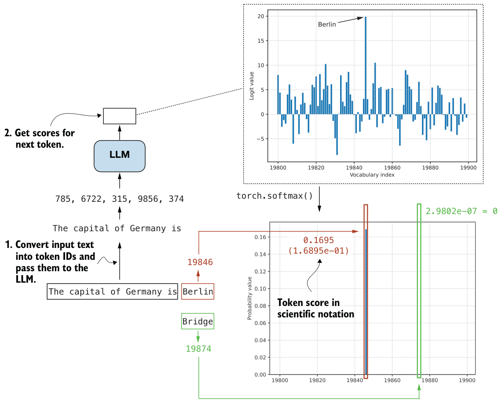
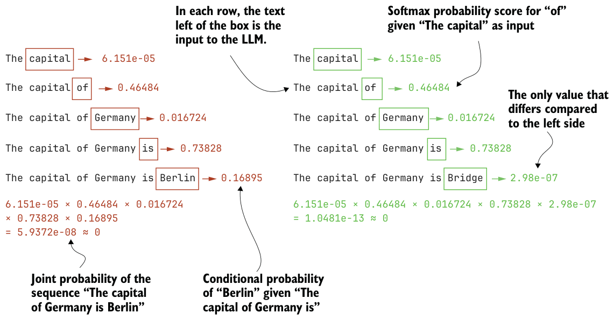

5.4Understanding token probability scores
Let’s now take the first step toward building a scorer based on the model’s own confidence (step 5 in figure 5.7), where confidence is a probability that the model assigns. At each position, the model will distribute the probability mass over the possible next tokens. If the tokens in a proposed answer consistently receive high probability, this suggests that the answer is more compatible with the model’s own internal preferences. Conversely, if the model assigns very low probability to many of the answer tokens, that’s a sign that the model itself does not strongly support that answer.
In this section, we’ll start by computing the token probability scores for a proposed answer and use them to estimate how likely the model considers that answer to be (step 3 in figure 5.7). This may seem like a detour, but these probability and log-probability

concepts will become important again in the next chapter, where they’ll reappear inside the training objective rather than only being an inference-time scoring signal.
The token probability scores we’ll compute in this section are also known in the literature as next-token probabilities, per-token probabilities, sequence likelihoods, or, more loosely, token-level likelihoods. They represent the probability that the model assigns to each possible next token, expressed as a normalized (softmax) distribution over the vocabulary.
Although this discussion of probabilities may sound complicated, it relies on the same mechanism used for text generation that we covered in the previous chapter. For instance, in chapter 4, you saw that the model assigns a logit score to each token in the vocabulary at each stage, and it selects the next token based on these scores. This process, which we discussed in section 4.4, is illustrated again in figure 5.8.
In the previous chapter, we looked up the vocabulary entry corresponding to the highest score (vocabulary index 19846, corresponding to the token "Berlin" in figure 5.8) to get the next generated token. Here, we’ll revisit the logits with a different goal in mind. Instead of generating the next token, we want to use the scores to quantify the model’s confidence in a particular answer. In other words, we are not going to generate anything based on the scores here; we are just inspecting them.
For example, consider two candidate answers we want to score:
"The capital of Germany is Berlin"
"The capital of Germany is Bridge"Our goal is to quantify how confident the model is in each answer. It is important to keep in mind that model confidence does not automatically imply correctness. A model

can assign high probability to an answer simply because it fits the patterns it has learned well, even if the answer is factually wrong. When this happens, we still need additional methods, such as retrieval-augmented generation, external tools such as web search, calculators, or code execution, or comparison-based approaches like self-consistency to detect and correct confidently wrong answers.
In figure 5.8, the input text "The capital of Germany is" is fed to the model, and the next token with the highest score ("Berlin") is selected. Instead of selecting a token, here we’ll compare the scores assigned to two candidate next tokens, "Berlin" and"Bridge", as shown in figure 5.9. ("Bridge" is used as an alternative because it appears within the vocabulary range shown in figure 5.8.)
Rather than working with the raw logits shown in figure 5.9, we convert them to probabilities. Probabilities are easier to interpret, they’re comparable across inputs, and they form the basis for the logprob scoring method we’ll use later in the chapter.
As discussed in chapter 4, applying torch.softmax converts logits into probability values. Figure 5.10 shows the resulting probability distribution. The token probabilities shown in figure 5.10 are computed using torch.softmax as we did in section 4.4.3, as part of the multinomial sampling procedure. The difference here is that we do not

sample from the distribution. Instead, we simply look up the probability assigned to specific tokens.
In figure 5.10, only the bar for "Berlin" is visible, with a probability of 0.1695. The probabilities for other tokens in the plotted range are near zero. This indicates that the model assigns higher confidence to "Berlin" than to "Bridge" as the next token, given
the input text "The capital of Germany is".In practice, we usually want to compare complete answers rather than individual tokens. This extension from single-token to sequence-level scoring is illustrated in figure

5.11, where we compute the probability of each token given its preceding tokens. This is the same procedure as in figure 5.10, except that we repeat it for every token in the sequence.
During ordinary text generation, the model does this one step at a time as it goes along, selecting the next token. Here, we use the same mechanism in a different way: instead of sampling new tokens, we take a completed candidate answer and score each of its tokens one by one under the model. We then multiply these probabilities to obtain the probability of the full sequence, also called the joint probability.
